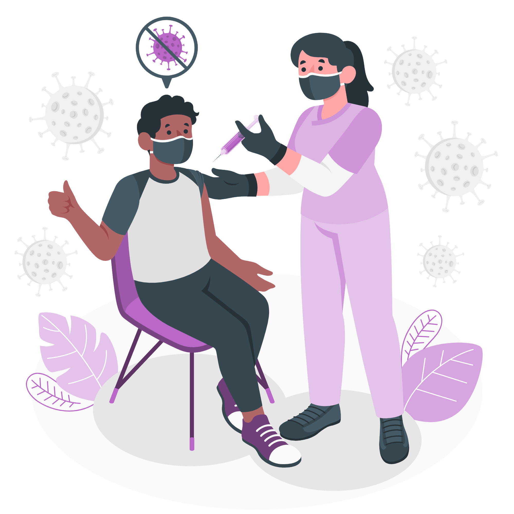

How to treat coronavirus at home

If your symptoms are mild enough that you can recover at home, you
should:
-
1. Get plenty of rest. You should isolate yourself at home if you have
any symptoms of coronavirus, and avoid any strenuous activity whilst
you are unwell.

- 2. Stay home. Don't go to work, school, or public places.

-
3. Drink fluids. You lose more water when you're sick. Dehydration can
make symptoms worse and cause other health problems.

- 4. Medications. Take proper medicines prescribed by doctors.

-
5. Monitor. If your symptoms get worse, call your doctor right away.
Don't go to their office without calling first. They might tell you to
stay home, or they may need to take extra steps to protect staff and
other patients.

The most important thing to do is to avoid infecting other people,
especially those who are over 65 or who have other health problems.
That means:

-
Try to stay in one place in your home. Use a separate bedroom and
bathroom if you can.
- Tell others you're sick so they keep their distance.
- Cover your coughs and sneezes with a tissue or your elbow.
- Wear a mask over your nose and mouth.
- Wash regularly, especially your hands.
-
Don't share dishes, cups, eating utensils, towels, or bedding with
anyone else.
-
Clean and disinfect common surfaces like doorknobs, counters, and
tabletops.
How do you know if your symptoms are getting worse?
Get medical care right away if you begin to have:
- Trouble breathing
- Pain or pressure in your chest
- Confusion or severe drowsiness